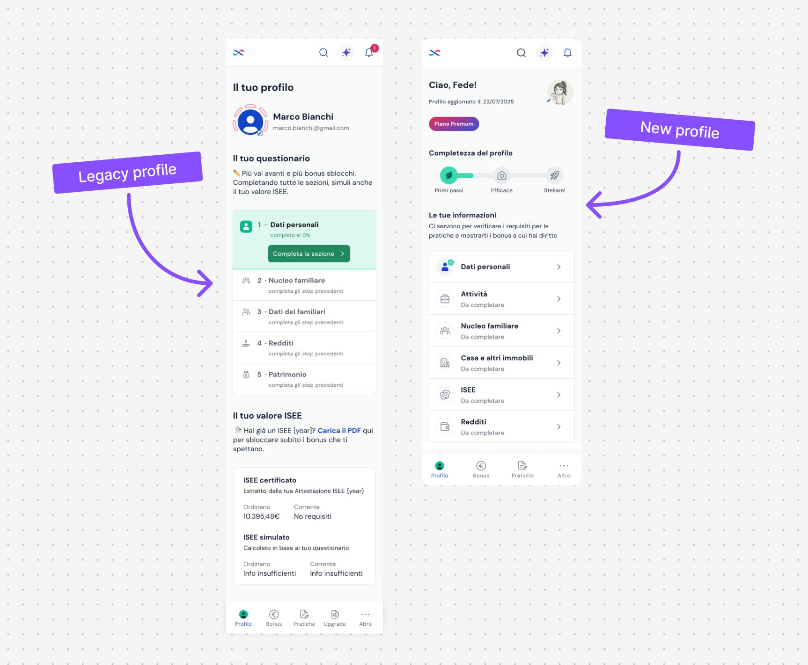
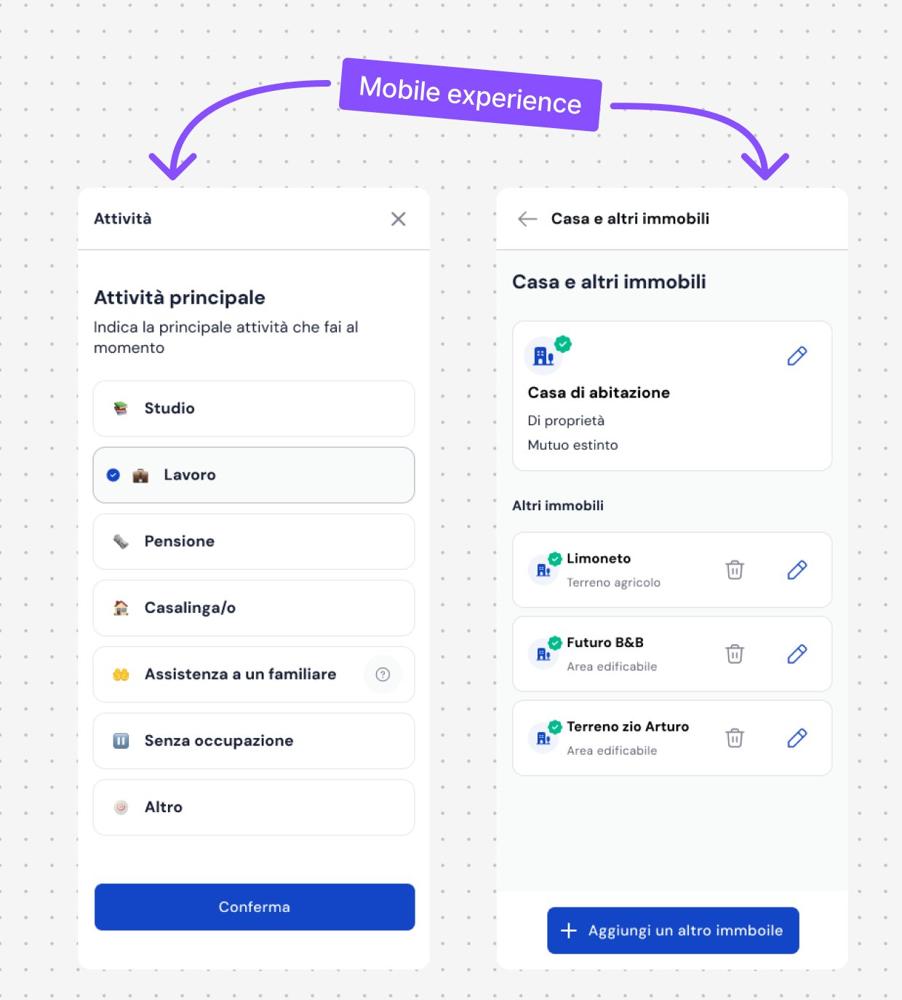

BonusX aiuta le persone in Italia a capire a quali bonus e agevolazioni hanno diritto. Il profilo utente — dati personali, nucleo familiare, situazione economica — è il cuore del prodotto: ogni richiesta di bonus si basa su queste informazioni.
Il profilo precedente evidenziava un importante friction point, che causava drop rate: gli utenti dovevano spesso completare intere sezioni di questionario anche solo per modificare un singolo dato. I dati del nucleo familiare, in particolare, erano spezzati in due questionari separati e diversi tra loro.
Entro i primi 3 mesi del mio ingresso in BonusX, una domanda era già chiara: “cosa succederebbe se il profilo chiedesse solo quello che serve, quando serve?” Ho iniziato subito a entrare nel dominio e a progettare una soluzione — sapendo che il progetto era grande, e che l’avremmo consegnato nell’arco di 2 quarter.

legacy profile vs new profile- Nuovo tasso di completamento dell’onboarding: 95%
- Conversione alle iscrizioni passata dal ~5% al ~10%
- Tempo di richiesta ridotto fino al 50% per i servizi principali
- Le nuove categorie/entità arrivate nei trimestri successivi si sono inserite nei pattern esistenti senza refactor di UI o codice — la scelta di progettare per la scalabilità si è rivelata corretta
UX/UI design end-to-end sulla nuova architettura del profilo, con focus su flussi dinamici, family data e — soprattutto — un design pensato per scalare: la roadmap prevedeva nuove categorie ed entità nei trimestri successivi, quindi ogni schermata doveva poter “accogliere” funzionalità non ancora definite.
Un progetto di questa portata non si disegna da solo. La Product Lead ha gestito l’architettura complessiva e la roadmap di rilascio a fasi, ma soprattutto mi ha supportata nelle fasi cruciali di discovery e validazione; insieme al team Welfare & Tax — che ha definito contenuti e logiche di eleggibilità delle domande — abbiamo validato gli user flow; infine ho gestito l’handoff con il team di sviluppo per garantire che i pattern scalabili venissero implementati correttamente.
- Ho condotto interviste e usability test per capire dove gli utenti si bloccavano nei questionari esistenti, in particolare sul flusso “nucleo familiare”
- Ho progettato i flussi dinamici: invece di sezioni fisse, il sistema chiede solo i campi richiesti dalla singola richiesta (fast-forward ai dati mancanti, editing puntuale senza dover ripetere l’intero questionario)
- Per il nucleo familiare, ho unificato i due questionari in un unico flusso: prima si stabilisce chi fa parte del nucleo, poi si aggiungono i dettagli di ciascun membro, con editing diretto sulla lista
- Ho usato Cursor + Claude per prototipare rapidamente varianti di flusso da testare, velocizzando il giro tra ipotesi e prototipo testabile
- Ho progettato i componenti pensando alla loro estensibilità: liste di “entità” (familiari, attività, beni) costruite come pattern riutilizzabile, non hardcoded per i campi attuali

mobile experience — flussi dinamici e liste di entità editabiliProgettare per ciò che non c’è ancora
Dato che il rollout del nuovo profilo si sarebbe svolto in fasi e dato che sapevamo che nei trimestri successivi sarebbero arrivate nuove categorie di dati, ho deliberatamente dato priorità ad un layout scalabile fin da subito.
In un sistema live e ad alto traffico, progettare per la scalabilità non è un costo aggiuntivo: è l’unico modo per evitare che ogni nuova feature diventi un piccolo redesign.
E vibecodare i prototipi di test mi ha permesso di esplorare più varianti di flusso nello stesso tempo in cui prima ne avrei testata una sola.